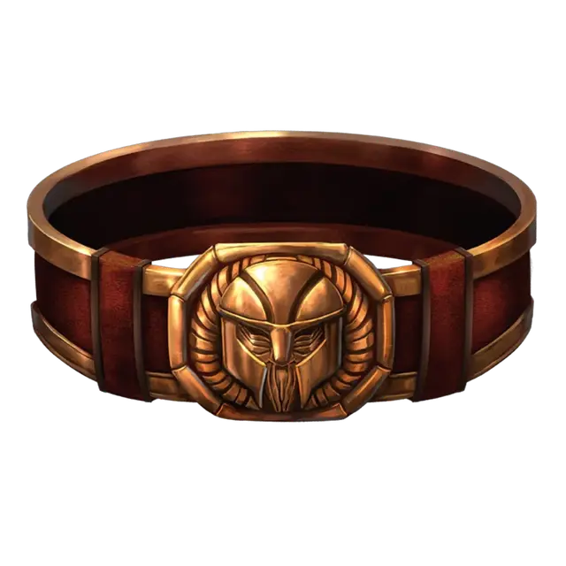

Пояс дварфов
Belt of Dwarvenkind
Чудесный предмет, редкий (требуется настройка)

Рекомендованная стоимость 4 000 ЗМ
Пока вы носите этот пояс, вы обладаете следующими преимуществами:
Дварфийский. Вы знаете Дварфийский язык.
Друг дварфов. Вы совершаете с Преимуществом проверки Харизмы (Убеждение), совершаемые при взаимодействиях с дварфами и дуэргарами.
Крепость. Ваше Телосложение увеличивается на 2, но не выше 20.
Кроме того, пока вы настроены на этот пояс, на каждом рассвете с шансом 50% вы отращиваете полную бороду, если можете отращивать бороду, а если у вас уже есть борода, то она становится гуще.
Если вы не дварф и не дуэргар, то пока вы носите этот пояс, получаете также следующие преимущества:
Тёмное зрение. Вы получаете Тёмное зрение дальностью 60 футов.
Сопротивление. Вы обладаете Сопротивлением урону Ядом. Кроме того, вы совершаете с Преимуществом спасброски на избежание или окончание состояния Отравленный.